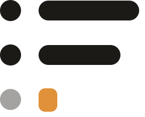

Work Journal
A personal, local-first log of short work notes captured throughout the day — and the tasks that go with them. Notes recover what you did; tasks hold what you still mean to do.
You write one line whenever something happens. Later — at standup, in a review, or as context for an LLM — you read the day back as Markdown and paste it wherever it needs to go.
It lives in the menu bar. One hotkey opens a text field for a note, another opens one for a task, and both disappear again as soon as you are done. The tray menu offers the same two, and carries today's note count beside its glyph — the only reminder to journal the app will ever give you.
Everything is stored locally — no account, no server. The notes and tasks are a SQLite file on your Mac, and Export writes all of it to Markdown so nothing is locked in. The app reaches the network only when you ask it to: to write a standup post with the language model you point it at, and to download an update you confirm.
Download
Download for macOSLatest release ·
Apple Silicon only. Unsigned and unnotarized — after dragging it to Applications you must clear the quarantine attribute macOS attached to it, or macOS will report the app as damaged:
xattr -dr com.apple.quarantine "/Applications/Work Journal.app"That step is not optional for a downloaded copy. A build you compiled yourself and never moved is not quarantined and needs nothing. It is also the only time you will do it: from then on, Settings › Updates › Check for updates finds the newest release and installs and restarts into it — the update is signed, and the app unpacks it itself.
What it does
Notes
- Capture a note from the note hotkey, the tray menu, or relaunching the app.
-
File it under a project by starting the line with
#name; names you have used already are offered as you type. - Rename a project — or fold one into another — and every note filed under it moves with it, in one operation.
- Read back any range of days — with presets for today, yesterday, this or last week, this or last month — narrowed to one project or not at all.
- Search every note's text to jump to the day it is filed under.
- Correct a note's wording, move it to another day or project, or delete it.
Tasks
- Create a task from its own hotkey, in a window that is always ready for the next one.
- Give it a date, and a time to the minute if you want one.
- Repeat it daily, weekly on the days you pick, monthly, yearly, or every N of those — one occurrence open at a time, never a backlog of missed ones.
- A dated task with a time raises a local macOS alert when it comes due. Nothing is sent anywhere; there is nothing to sign in to.
- Tasks View groups what is open into overdue, today, upcoming, and unscheduled. Completed tasks are their own view, and a recurring task keeps its completed occurrences in a history of its own.
Standup Post
- Copy yesterday's digest straight from the tray menu, without opening a window — the day's notes as Markdown, with nothing to configure.
- One click further in, copy the Standup Material: yesterday's notes plus the work kept and the tasks still standing. The complete input, and what you paste when no model is set up.
- Or have the standup written for you, in prose, from exactly that material — read it before you copy it, since it is written and may be wrong. Nothing is kept: close the window and it is gone.
- The writing is done by a language model you point the app at — any OpenAI-compatible endpoint, your key, your prompt for the voice. The key lives in your Mac's keychain, and every other feature works with none of it configured.
Meetings
- Today's meetings from the macOS calendar can become notes on their own, so the day is not only what you remembered to type.
- Off until you turn it on, and then only over the calendars you tick. Meetings you declined and events covering the whole day are left alone.
Reading back, and settings
- Copy the range you are looking at as Markdown.
- Export every note and task to a Markdown file, regardless of what is on screen.
- Remap either hotkey, pick a light, dark, or system theme, start at login, and choose which calendars meetings come from.